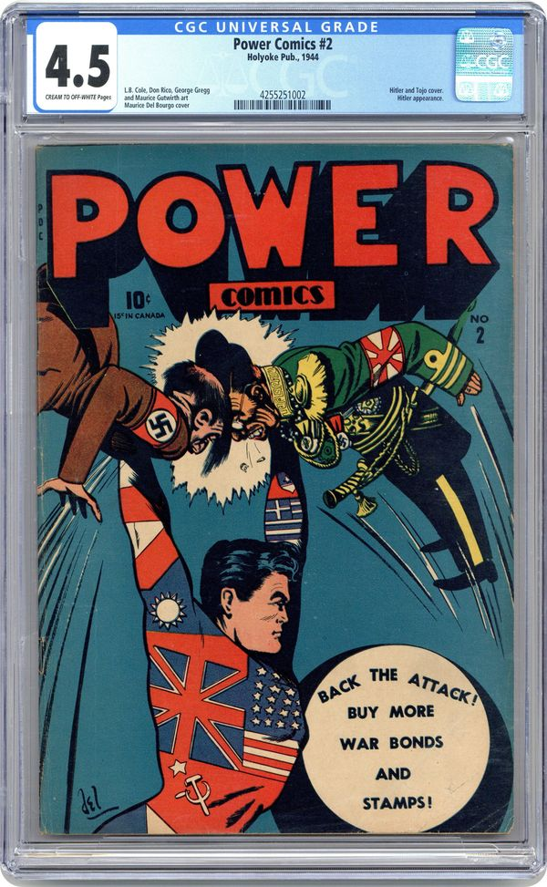
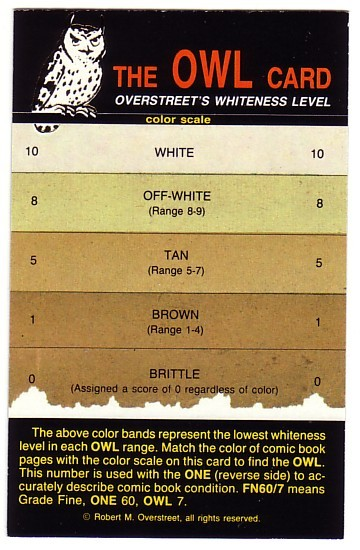

A month ago I knew next to nothing about training a machine learning model.
I’m not knowledgable when it comes to math or data science. This probably won’t generally be an ML blog so I’ll try and make everything understandable with just general programming knowledge
Background
This a comic encapsulated and graded by CGC, which was the first comic grading service and remains the most popular 
There are a couple companies (AGS) which use AI to grade trading cards, but as far as I can tell the only attempt to have is asking ChatGPT. The problem is, these huge multimodal models aren’t very good at grading comics. They rarely face a scenario in their training data where it matters much to get the grade right.
well, why don’t we have AI grading comic books?
- There’s no public dataset for images of physical comic books
- Several images are required per comic
- some defects are very hard to detect from an image or two
- comic covers have a lot of art and color
That last point is quite interesting. If you don’t have a perfect reference copy available, there’s a level of “intelligence” required to
Approach
Maybe the most impactful decision is whether to approach this as a object detection problem. That is, will the model attempt to annotate each defect, or will it act as more of a black box
I’m going to present the steps sequentially, but in reality .
Making the dataset
There’s a lot of graded comic books on the internet because lots of people sell them. Most of the photos are pretty bad though. The cases are so reflective in good lighting that they’re practically mirrors, which means taking pictures at an off angle. A lot of listings don’t even include the back cover which is equally important to the grade
Once we train a model, we can look at the top losses and usually either learn something, or remove a bad image from the dataset
Remember that bias and consistency score? Now that we have a model, .
Pre-processing the images
Ideally, we don’t want to waste any pixels which means
Traditional computer vision techniques struggled quite a bit
I ended up writing an algorithm to scan from each edge
The bottom of the plastic casing has a lot of color changes before the comic which proved difficult to sort out since it’s not very consistent
my proposed solution 1. Get a ton of images of already graded comics from the internet 2. throw a ton of compute/ML at it 3. combine each
Most of the grade impact is in the 10% of pixels at the edges of each comic,
EDA
[Show a graph of grade by year (5 at a time) and also label type. Before and after filtering for ML input]
Year is extremely correlated. Cheaper books aren’t worth grading unless a high grade is expected (often 9.8 or bust)
We could account for the imbalance in our loss function. Another approach is making our dataset more concentrated on outliers
Benchmark
it’s always good to start with an exceedingly simple baseline. Guessing a year’s average on a training dataset of just CGC comics results in an MAE of 1.02
Train a basic linear regression based on year
The next logical step is to see how well people do, and luckily there’s an entire forum of people asking for grades, often posting the official results when they come back. The only issue is that the average comic will be different, since people might only post their most expensive submissions or anything particularly “tough” to grade.
for 151 guesses over 34 posts the MAE was 0.80, and taking the average guess for each post results in a MAE of 0.74.
MAE stands for mean absolute error, basically how far off a guess is on average
You can see how well you do on the dataset here https://www.conradkay.com/grade
My MAE on the dataset is around 0.5. I used the high-res scans and took 15 seconds on average which is very short.
More Data
So far the model has only been trained on already CGC/CBCS graded comics
Imagine we take several different graders . We can get a bias score, and a consistency score. It doesn’t matter much how accurate the model is, as long as it’s grades average out to being correct it will have a bias of 0, and we can arbitrarily set a consistency of 1 as equaling the model.
Basically we can create a model to convert one of their grades into the probabilities our model would output on average. So if they gave a comic an 8.5, we might output 40% 8.5, 30% 9.0, 15% 8.0, 0% 9.9, (etc)
Multiple outputs
There’s actually three dimensions for a graded comic
You may have notice the small “CREAM TO OFF-WHITE Pages” text

Basically the only useful visual information is whatever sliver of the interior pages we can see, and the year. Year of course because we’re measuring aging, but even more than that because comics stopped being printed on pulp/newsprint in the mid 90s, instead using a glossy paper that doesn’t age.
“Restoration is the act of adding foreign material to a comic book through certain techniques to return its appearance to an ideal or original state” ([]https://www.cgccomics.com/resources/restoration/). Colloquially referred to as the “Purple Label of Death” since it kills the valuation of any comic unlucky enough to receive it.
The amount of data available is much more limited, since there’s 11 different types and most comics are unrestored. Luckily the grading label itself says each type of restoration performed! So you can train a model to output the probability of each class separately
I’ll get back to this project eventually, but there are divs that need centering
Other dimensions
Cleaning and pressing are restoration methods that the grading companies allow
A CGC 9.4 could come back a 9.8 after a clean and or press
Pressing inherently only works on defects which don’t affect color (mostly bends, indents, warping)
That means lighting differences from depth is what makes it visible, which is somewhat lacking from the 2d scans. Straight from CGC, “unfortunately, scans are not a reliable method of determining press potential”
I’d argue the model giving grades post pressing is a bit more of a feature than a bug